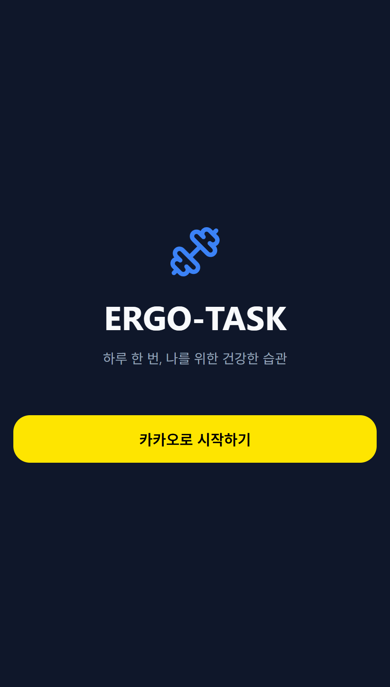
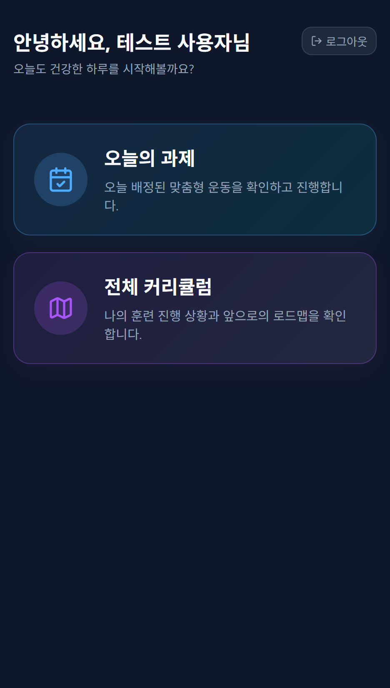
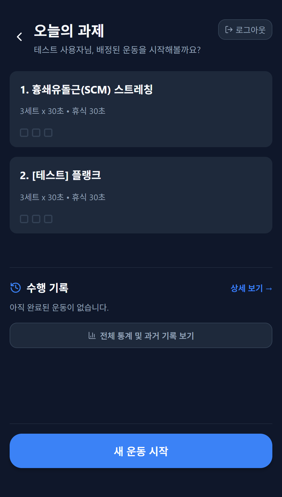
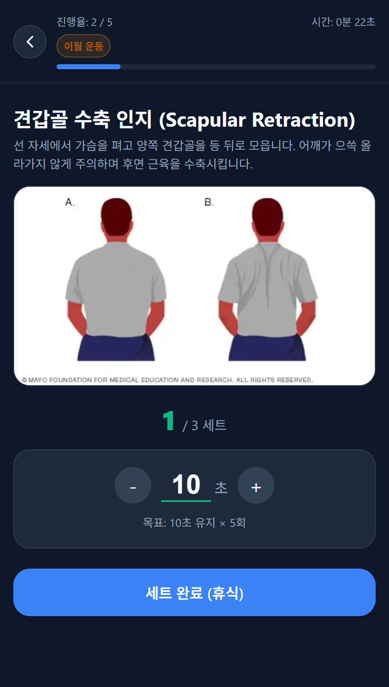
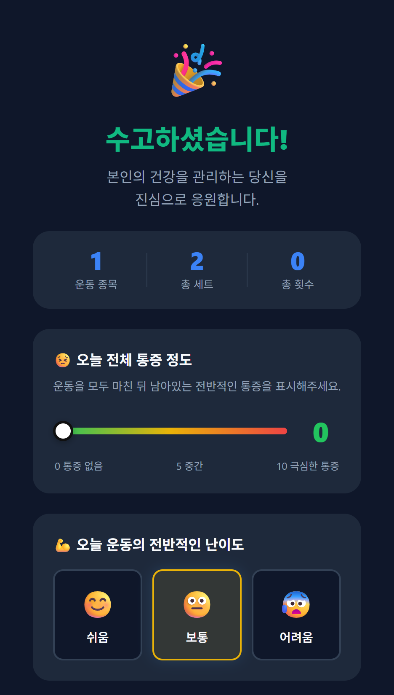
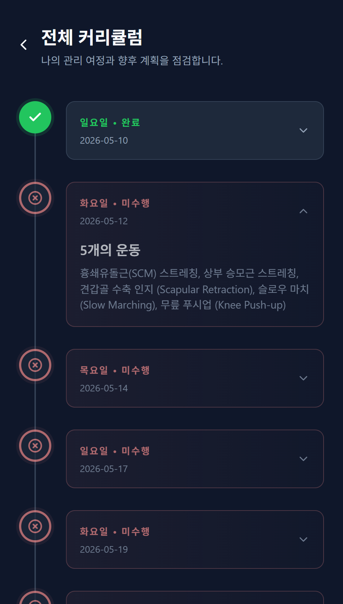

1. 관리자가 방문해 평가를 진행하고 분석합니다
현재 몸 상태와 생활 패턴을 확인한 뒤, 어떤 관리가 필요한지 함께 정리합니다.
Beta Test App
몸 상태를 이해하고 나에게 맞는 운동 방향을 점검할 수 있는지 확인하기 위해, 소수의 참여자와 베타 테스트를 진행하고 있습니다.
Experience Flow
로그인부터 과제 확인, 운동 수행, 피드백 기록까지 실제 사용 흐름을 따라가며 경험합니다.
앱 흐름에 따라 좌우로 넘기며 볼 수 있습니다.






현재 몸 상태와 생활 패턴을 확인한 뒤, 어떤 관리가 필요한지 함께 정리합니다.
참여자에게 맞는 과제를 정하고, 앱에서 어떤 운동을 따라가면 되는지 안내합니다.
통증, 난이도, 수행 결과를 남기며 기록 방식이 부담스럽지 않은지 확인합니다.
사용 과정에서 이해된 점과 불편했던 지점을 돌아보며 다음 개선 방향을 정리합니다.
Who We Need
Participation
현재 몸 상태와 생활 패턴을 확인하는 평가를 1시간에서 1시간 30분 정도 진행합니다.
협의한 기간 동안 앱으로 과제를 수행하고, 전체 흐름이 자연스러운지 경험합니다.
무엇이 이해됐고 무엇이 불편했는지, 계속 써보고 싶은지에 대한 의견을 듣고 싶습니다.
Contact
간단한 상황을 먼저 확인한 뒤, 가능한 일정과 진행 방식을 함께 맞춰보겠습니다.